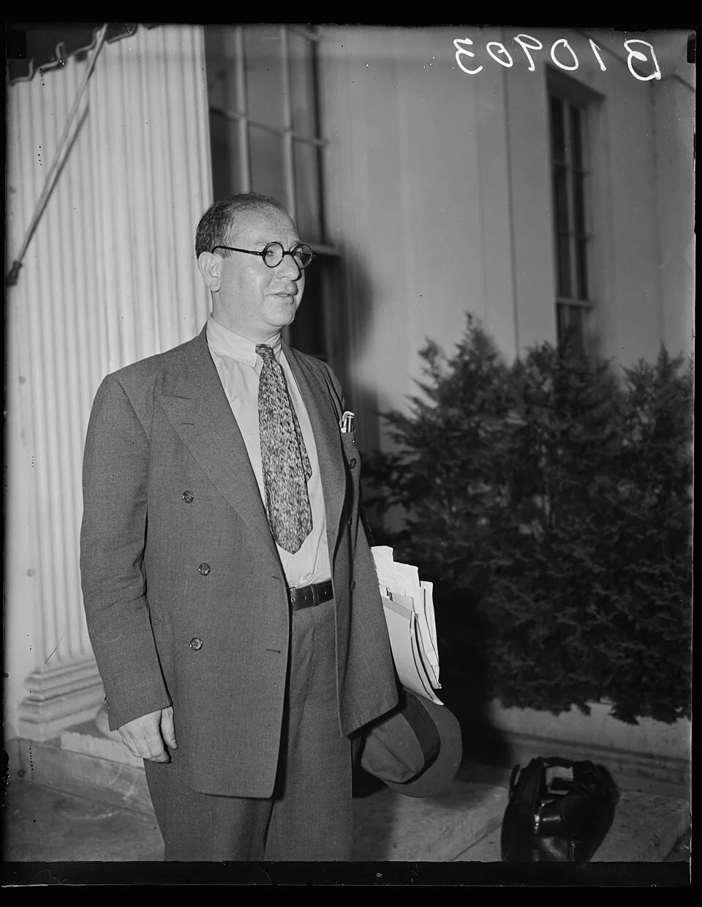
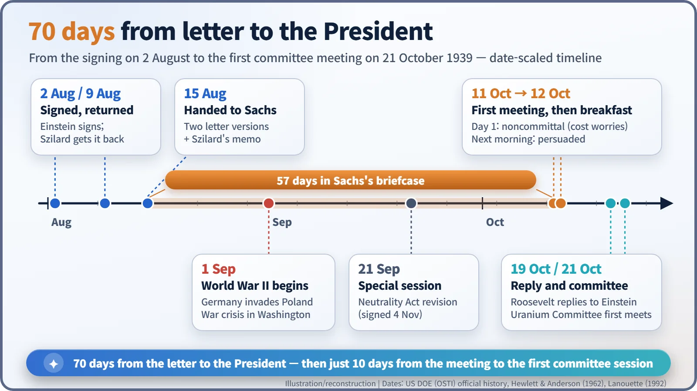
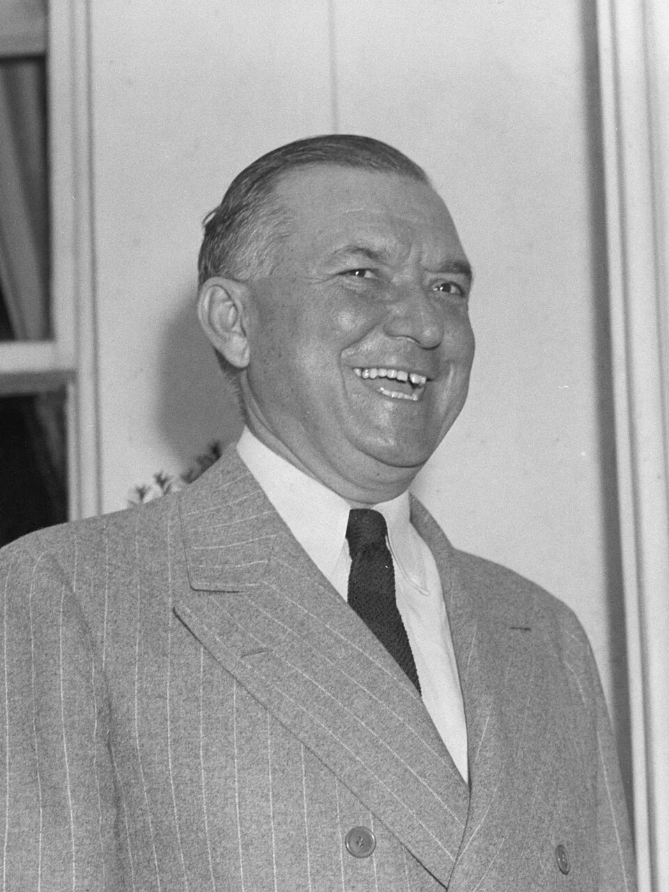
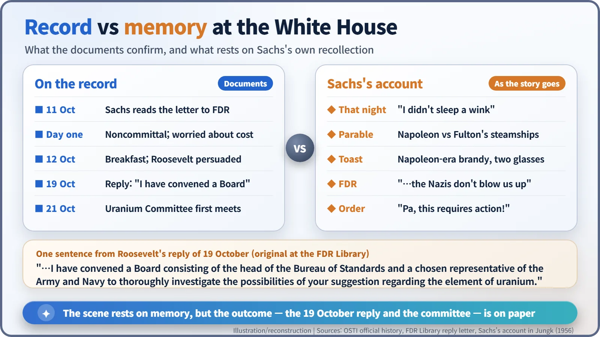

Nuclear History · 077
Seventy Days in a Briefcase, Then Breakfast — Alexander Sachs Briefs Roosevelt (1939)
A Wall Street economist waited 70 days for the right moment, read the warning to the President, and, by his own account, sealed it over breakfast with a story about Napoleon.
Einstein's warning letter of 2 August 1939 did not reach Franklin D. Roosevelt for 70 days. It was carried by Alexander Sachs, a Wall Street economist and unofficial adviser, who read it to the President on 11 October and, by his own account, won him over at breakfast the next morning. Roosevelt's four-sentence reply of 19 October set up a small uranium committee: the first of many decisions on the road to the Manhattan Project.
A four-sentence reply
On 19 October 1939 the White House mailed a letter to a summer cottage near the far end of Long Island, New York. It was addressed to Albert Einstein. It opened "My dear Professor:" and its body ran to just four sentences. The one that mattered read: "I found this data of such import that I have convened a Board consisting of the head of the Bureau of Standards and a chosen representative of the Army and Navy to thoroughly investigate the possibilities of your suggestion regarding the element of uranium." [2]
This was the President's answer to the warning letter Einstein had signed that summer. Yet Einstein never went to the White House over it. The man who sat across from Franklin D. Roosevelt and read the letter aloud was not a physicist at all. He was a Wall Street economist.
Why an economist, not a physicist?
Leó Szilárd (1898–1964), who drafted the letter, worried that a warning from refugee physicists might never reach the President's desk, however famous the signature. So he chose a courier who already had a seat at the table: Alexander Sachs (1893–1973).
Born in the Russian Empire, in what is now Lithuania, Sachs had studied at Columbia and ran economic research at the Lehman Corporation, an investment company. In 1933 he organised the economic research division of Roosevelt's National Recovery Administration, and he was known as a friend of the President and part of his circle of unofficial advisers. What the job needed was not expertise in neutrons but the ability to get an unhurried hour with Roosevelt. [6]

Why did the letter sleep for two months?
The letter was dated 2 August 1939. Szilárd received the signed copy back by post on 9 August and, according to his biographers, handed Sachs two versions of the letter, a short one and a long one, plus a memorandum of his own on 15 August. Then, on 1 September, Germany invaded Poland. The White House was swamped by the war crisis, and on 21 September Congress met in special session to revise the Neutrality Act. [5]
Sachs chose not to rush. A few minutes squeezed into a crisis schedule would only bury the papers, so he deliberately waited until the President could give the matter proper attention. Counting from the date on the letter, the wait lasted 70 days; counting from the day Sachs received it, 57 days.

11 October: the first meeting stalls
On 11 October 1939 Sachs finally sat down with Roosevelt at the White House. He read aloud the letter, Szilárd's memorandum and a longer summary he had written himself. According to the official history by Hewlett and Anderson, the President's secretary, Brigadier General Edwin M. "Pa" Watson (1883–1945), and two ordnance experts from the Army and Navy were also in the room. [3]
The response was lukewarm. The US Department of Energy's official history says Roosevelt was at first noncommittal and worried about where the money would come from. Still, Sachs left with an invitation to breakfast the next morning. "That night I didn't sleep a wink," he later recalled. [1] [4]

Napoleon at the breakfast table
The scene on the morning of 12 October comes to us mainly through Sachs's own later account. Instead of repeating the science, he said, he told a story from history: a young American inventor, Robert Fulton, offered Napoleon a fleet of steamships for an invasion of England, and Napoleon, thinking such ships impossible, sent him away. The point was clear without being said: a leader who fails to see a new technology can lose everything. [4]
According to the story Sachs told, Roosevelt sat silent for several minutes, then wrote a note, and a servant brought a bottle of old French brandy from Napoleon's time that the family had kept for years. Roosevelt filled two glasses and said: "Alex, what you are after is to see that the Nazis don't blow us up." "Precisely," Sachs replied. The President then called in Watson: "Pa, this requires action!"
The records do not agree on every detail. The official history places these words in the 11 October meeting, while Sachs's recollection puts them at the next morning's breakfast. Napoleon and the brandy appear only in Sachs's account. Books that give the date of the meeting as 12 October are usually referring to that breakfast. [3]

What a four-sentence reply set in motion
Whatever happened at the table, the outcome is on paper. In his reply of 19 October, after the sentence quoted above, Roosevelt added: "I am glad to say that Dr. Sachs will cooperate and work with this Committee and I feel this is the most practical and effective method of dealing with the subject." Two days later, on 21 October, the Advisory Committee on Uranium met for the first time, chaired by Lyman Briggs, director of the National Bureau of Standards. [2] [3]
This was not the day the atomic bomb was approved. What Roosevelt created was a small advisory committee, and the Department of Energy's history calls his approval "merely the first decision among many" that eventually led to the Manhattan Project. Nor is it true that Einstein persuaded the President in person; he stayed on Long Island, and the reply went to him there. [1]
Sachs's own story did not end in 1939. He later said that in December 1944 he met Roosevelt again to propose that the bomb's power be demonstrated before it was used, but there is no evidence that Roosevelt adopted the plan. [6]
The scientists' warning was accurate, but accuracy alone did not make policy. It took a translator who waited for the moment the President could listen, and who put the message in terms he would understand. Seventy days in a briefcase and one breakfast were the time that translation took.